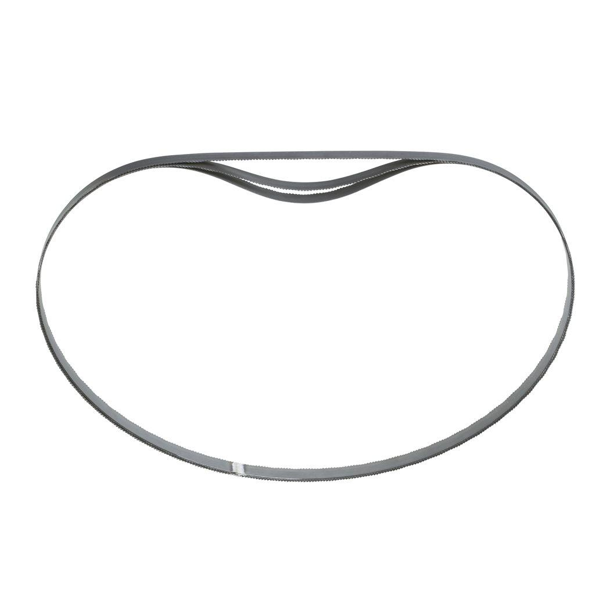
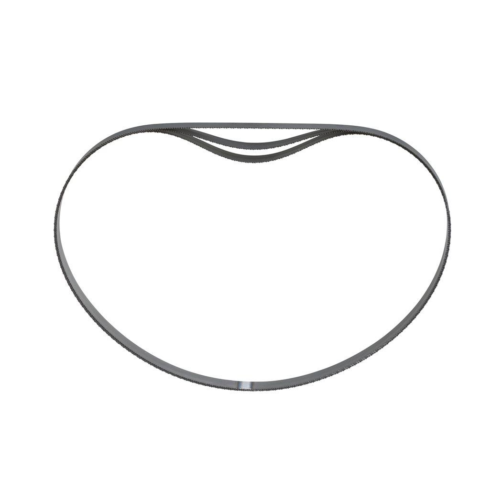
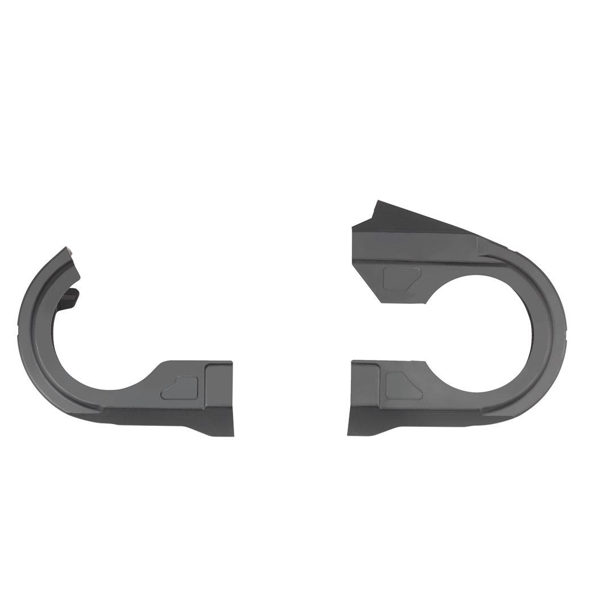
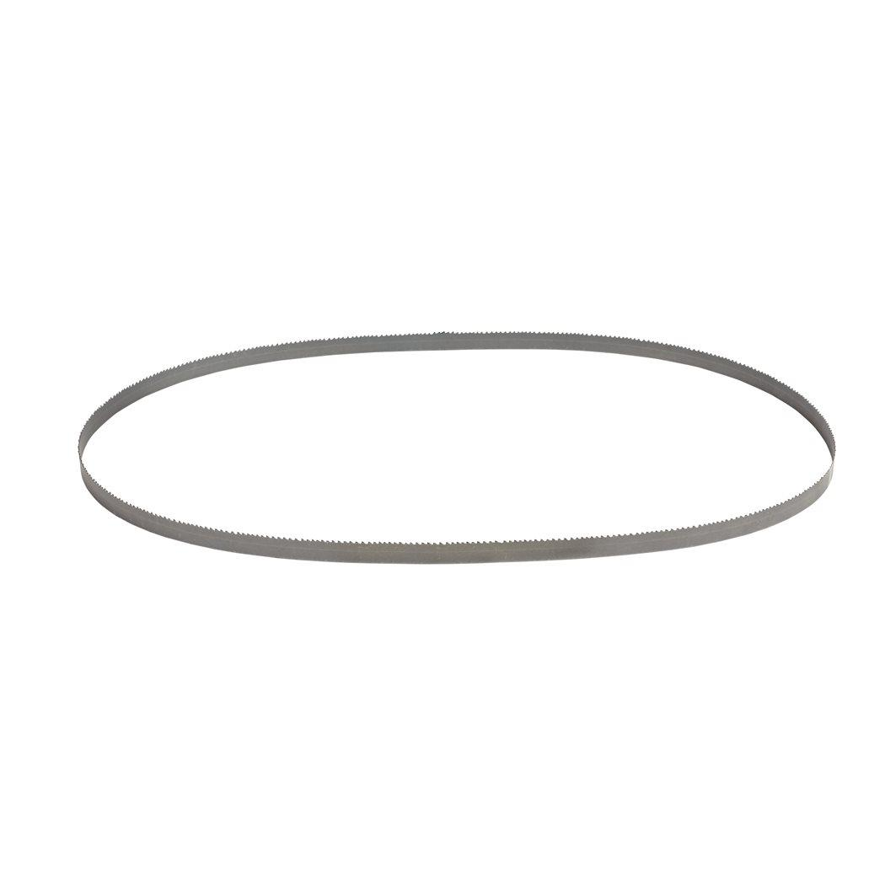

| Material wall thickness (mm) | 4 - 5 |
| Materials suited for | Angle Iron|Galvanised Pipe|Stainless steel|Cast Iron |
| Max. capacity (mm) | 4 - 5 |
| Pack quantity | 3 |
| Total length (mm) | 1140 |
| Article Number | 48390521 |
| EAN | 045242132263 |